install.packages("tidyverse")
install.packages("readxl")
install.packages("janitor")
install.packages("broom")
install.packages("MASS")
install.packages("glmnet")
install.packages("moments")
install.packages("ineq")
install.packages("vegan")
install.packages("lavaan")
install.packages("boot")
install.packages("ggridges")
install.packages("ggalluvial")
install.packages("igraph")
install.packages("ggraph")
install.packages("patchwork")Module 7. Advanced Analytics for Research
Tổng quan Module
TipLearning Outcomes
Sau khi hoàn thành Module 7, học viên có thể:
- Thực hiện thống kê mô tả nâng cao
- Áp dụng mô hình hồi quy nâng cao cho nhiều loại biến phụ thuộc
- Thực hiện Ridge, LASSO và Elastic Net Regression
- Hiểu logic cơ bản của SEM nâng cao
- Làm quen với Bayesian thinking
- Thực hiện Monte Carlo simulation
- Giải thích Simpson’s Paradox
- Tạo biểu đồ Likert nâng cao
- Xây dựng visualization gallery bằng
ggplot2 - Chọn đúng phương pháp phân tích theo câu hỏi nghiên cứu
NoteModule Logic
Module 7 là Advanced Research Lab.
Module 1–6 trả lời:
How do we analyze research data?Module 7 trả lời:
How do we extend research analysis to advanced methods and publication-ready outputs?Workflow:
Advanced data
↓
Advanced descriptive statistics
↓
Advanced regression
↓
Regularized regression
↓
SEM extension
↓
Bayesian thinking
↓
Monte Carlo simulation
↓
Simpson's Paradox
↓
Likert visualization
↓
Advanced ggplot2 gallery
↓
Research method selection7.1 Load Packages and Data
NoteKnowledge Notes
What?
Module 7 sử dụng một workbook dữ liệu mô phỏng công khai, phù hợp cho đào tạo phân tích nâng cao.
Data file
data/advance/module7_advanced_data.xlsxWhy?
Một workbook nhiều sheet giúp mỗi kỹ thuật có một dataset riêng, tránh trộn mục tiêu phân tích.
Install Packages
Load Core Packages
library(tidyverse)
library(readxl)
library(janitor)
library(broom)
library(patchwork)Set Data Path
advanced_file <- if (file.exists("data/advance/module7_advanced_data.xlsx")) {
"data/advance/module7_advanced_data.xlsx"
} else {
"data/advanced/module7_advanced_data.xlsx"
}Check Available Sheets
excel_sheets(advanced_file) [1] "README" "01_Advanced_Descriptive"
[3] "02_Advanced_Regression" "03_Ridge_Lasso_Elastic"
[5] "04_SEM_Advanced" "05_Bayesian_MonteCarlo"
[7] "06_Simpsons_Paradox" "07_Likert_Advanced"
[9] "08_Visualization_Heatmap" "09_Visualization_Volcano"
[11] "10_Visualization_Network" "Codebook"
[13] "Dashboard"
WarningCommon Mistakes
Nếu Quarto báo không tìm thấy file, kiểm tra chính xác thư mục:
data/advance/module7_advanced_data.xlsxkhác với:
data/advanced/module7_advanced_data.xlsx7.2 Advanced Descriptive Statistics
NoteKnowledge Notes
What?
Advanced descriptive statistics mở rộng beyond mean and SD.
Includes
- Missing data audit
- Skewness
- Kurtosis
- Outlier screening
- Gini index
- Diversity index
When?
Dùng khi muốn hiểu sâu hơn về chất lượng và hình dạng dữ liệu.
Import Data
adv_desc <- read_excel(
advanced_file,
sheet = "01_Advanced_Descriptive"
) |>
clean_names()Overview
glimpse(adv_desc)Rows: 500
Columns: 19
$ id <chr> "ADV0001", "ADV0002", "ADV0003", "ADV0004", "ADV000…
$ region <chr> "North", "North", "South", "Central", "Central", "N…
$ school <chr> "School_5", "School_3", "School_10", "School_1", "S…
$ gender <chr> "Male", "Male", "Female", "Female", "Female", "Male…
$ age <dbl> 32, 32, 23, 40, 42, 29, 20, 47, 22, 27, 32, 28, 40,…
$ income_million_vnd <dbl> 10.88, 28.33, 14.17, 13.52, 13.83, 11.83, 12.99, 13…
$ gpa <dbl> 2.65, 2.91, 2.94, 2.99, 2.82, 2.34, 3.31, 3.57, 3.8…
$ satisfaction <dbl> 3.26, 3.25, 2.61, 4.01, 4.88, 4.85, 2.15, 2.05, 4.1…
$ hospital_cost <dbl> 7.84, 43.03, 8.03, 23.80, 47.09, 6.94, 69.79, 16.22…
$ wait_time_min <dbl> 30.2, 40.4, 7.6, 31.9, 19.8, 19.3, 15.0, 22.9, 11.2…
$ claims_count <dbl> 3, 6, 0, 3, 5, 4, 4, 2, 2, 7, 7, 4, 2, 1, 3, 2, 4, …
$ diagnosis_group <chr> "Low risk", "Low risk", "Low risk", "Medium risk", …
$ event <dbl> 1, 0, 0, 1, 0, 0, 1, 0, 1, 0, 1, 0, 0, 0, 0, 0, 0, …
$ time_to_event_days <dbl> 178, 249, 336, 20, 199, 344, 20, 152, 232, 193, 18,…
$ missing_score <dbl> 49.01, 45.18, 34.14, 40.35, 65.08, 45.21, 34.78, 55…
$ outlier_score <dbl> 0.08, 0.92, 1.13, 0.77, 0.26, 0.33, -0.13, -0.21, 1…
$ weight_kg <dbl> 61.5, 63.4, 75.2, 73.0, 60.1, 73.9, 59.4, 71.5, 64.…
$ height_cm <dbl> 161.3, 155.5, 166.1, 165.6, 165.9, 163.5, 168.1, 15…
$ date <chr> "2026-01-12", "2026-06-25", "2026-06-10", "2026-01-…Missing Data Audit
adv_desc |>
summarise(
across(
everything(),
~ sum(is.na(.))
)
)Central Tendency and Variability
adv_desc |>
summarise(
age_mean = mean(age, na.rm = TRUE),
age_median = median(age, na.rm = TRUE),
age_sd = sd(age, na.rm = TRUE),
age_iqr = IQR(age, na.rm = TRUE),
income_mean = mean(income_million_vnd, na.rm = TRUE),
income_median = median(income_million_vnd, na.rm = TRUE),
income_sd = sd(income_million_vnd, na.rm = TRUE),
income_iqr = IQR(income_million_vnd, na.rm = TRUE)
)Skewness and Kurtosis
if (requireNamespace("moments", quietly = TRUE)) {
tibble(
variable = c("income_million_vnd", "hospital_cost", "wait_time_min"),
skewness = c(
moments::skewness(adv_desc$income_million_vnd, na.rm = TRUE),
moments::skewness(adv_desc$hospital_cost, na.rm = TRUE),
moments::skewness(adv_desc$wait_time_min, na.rm = TRUE)
),
kurtosis = c(
moments::kurtosis(adv_desc$income_million_vnd, na.rm = TRUE),
moments::kurtosis(adv_desc$hospital_cost, na.rm = TRUE),
moments::kurtosis(adv_desc$wait_time_min, na.rm = TRUE)
)
)
}Outlier Detection by IQR
q1 <- quantile(adv_desc$outlier_score, 0.25, na.rm = TRUE)
q3 <- quantile(adv_desc$outlier_score, 0.75, na.rm = TRUE)
iqr_value <- IQR(adv_desc$outlier_score, na.rm = TRUE)
lower_bound <- q1 - 1.5 * iqr_value
upper_bound <- q3 + 1.5 * iqr_value
adv_desc |>
filter(
outlier_score < lower_bound |
outlier_score > upper_bound
)Gini Index
if (requireNamespace("ineq", quietly = TRUE)) {
ineq::Gini(adv_desc$income_million_vnd)
}[1] 0.249301Diversity Index
diagnosis_counts <- adv_desc |>
count(diagnosis_group)
diagnosis_countsif (requireNamespace("vegan", quietly = TRUE)) {
tibble(
shannon = vegan::diversity(diagnosis_counts$n, index = "shannon"),
simpson = vegan::diversity(diagnosis_counts$n, index = "simpson")
)
}
TipKey Points
Advanced descriptive statistics giúp phát hiện các vấn đề mà mean và SD không thể hiện đầy đủ.
7.3 Advanced Regression Models
NoteKnowledge Notes
What?
Advanced regression mở rộng hồi quy tuyến tính cho nhiều loại biến phụ thuộc.
When?
| Outcome type | Model |
|---|---|
| Binary | Logistic regression |
| Ordinal | Ordinal regression |
| Count | Poisson regression |
| Overdispersed count | Negative binomial |
| Continuous | Linear regression |
Import Data
adv_reg <- read_excel(
advanced_file,
sheet = "02_Advanced_Regression"
) |>
clean_names()Logistic Regression
logit_model <- glm(
adopted_ai ~ digital_readiness + leadership_support + workload + training_hours,
data = adv_reg,
family = binomial
)
tidy(logit_model, exponentiate = TRUE, conf.int = TRUE)Ordinal Regression
if (requireNamespace("MASS", quietly = TRUE)) {
ordinal_model <- MASS::polr(
as.factor(ordinal_performance) ~ digital_readiness + leadership_support + motivation,
data = adv_reg,
Hess = TRUE
)
broom::tidy(ordinal_model, conf.int = TRUE)
}Poisson Regression
poisson_model <- glm(
absences_count ~ workload + job_satisfaction + training_hours,
data = adv_reg,
family = poisson
)
tidy(poisson_model, exponentiate = TRUE, conf.int = TRUE)Mediation Logic
med_model_a <- lm(
mediator_engagement ~ leadership_support,
data = adv_reg
)
med_model_b <- lm(
productivity_score ~ leadership_support + mediator_engagement,
data = adv_reg
)
tidy(med_model_a)tidy(med_model_b)Moderation Logic
moderation_model <- lm(
productivity_score ~ digital_readiness * moderator_autonomy,
data = adv_reg
)
tidy(moderation_model)
WarningCommon Mistakes
Không chọn mô hình chỉ vì quen dùng lm().
Cần chọn mô hình theo loại biến phụ thuộc.
7.4 Ridge, LASSO and Elastic Net
NoteKnowledge Notes
What?
Regularized regression là nhóm mô hình giúp xử lý nhiều predictors và đa cộng tuyến.
Methods
| Method | Use |
|---|---|
| Ridge | Shrinks coefficients |
| LASSO | Variable selection |
| Elastic Net | Combines Ridge and LASSO |
When?
Dùng khi có nhiều biến dự báo, các biến tương quan cao hoặc mục tiêu là prediction.
Import Data
reg_ml <- read_excel(
advanced_file,
sheet = "03_Ridge_Lasso_Elastic"
) |>
clean_names()Prepare Matrix
x <- reg_ml |>
select(starts_with("x")) |>
as.matrix()
y <- reg_ml$y_continuousRidge Regression
if (requireNamespace("glmnet", quietly = TRUE)) {
ridge_cv <- glmnet::cv.glmnet(
x = x,
y = y,
alpha = 0
)
ridge_cv$lambda.min
}[1] 0.1599683LASSO Regression
if (requireNamespace("glmnet", quietly = TRUE)) {
lasso_cv <- glmnet::cv.glmnet(
x = x,
y = y,
alpha = 1
)
lasso_cv$lambda.min
}[1] 0.0466316Elastic Net Regression
if (requireNamespace("glmnet", quietly = TRUE)) {
elastic_cv <- glmnet::cv.glmnet(
x = x,
y = y,
alpha = 0.5
)
elastic_cv$lambda.min
}[1] 0.05857201LASSO Coefficients
if (requireNamespace("glmnet", quietly = TRUE)) {
coef(lasso_cv, s = "lambda.min")
}26 x 1 sparse Matrix of class "dgCMatrix"
lambda.min
(Intercept) 0.036075965
x1 2.472840254
x2 .
x3 .
x4 .
x5 -1.544161905
x6 -0.042223612
x7 -0.053072866
x8 .
x9 .
x10 1.302372972
x11 .
x12 -0.052259719
x13 -0.009689880
x14 0.007077381
x15 0.163634594
x16 .
x17 -0.136109787
x18 1.913872427
x19 .
x20 .
x21 .
x22 .
x23 -1.023814628
x24 .
x25 0.027910928
ImportantResearch Application
Regularized regression phù hợp cho các bài nghiên cứu prediction, đặc biệt khi có nhiều biến khảo sát hoặc nhiều biến hành vi.
7.5 Advanced SEM Overview
NoteKnowledge Notes
What?
Advanced SEM mở rộng từ PLS-SEM cơ bản sang CFA, CB-SEM, multi-group SEM và measurement invariance.
When?
Dùng khi trọng tâm là theory testing và measurement quality.
Import SEM Data
sem_adv <- read_excel(
advanced_file,
sheet = "04_SEM_Advanced"
) |>
clean_names()CFA with lavaan
if (requireNamespace("lavaan", quietly = TRUE)) {
cfa_model <- '
PE =~ pe1 + pe2 + pe3 + pe4
EE =~ ee1 + ee2 + ee3 + ee4
SI =~ si1 + si2 + si3 + si4
FC =~ fc1 + fc2 + fc3 + fc4
DR =~ dr1 + dr2 + dr3 + dr4
TR =~ tr1 + tr2 + tr3 + tr4
BI =~ bi1 + bi2 + bi3
AU =~ au1 + au2 + au3
'
cfa_fit <- lavaan::cfa(
cfa_model,
data = sem_adv,
ordered = names(sem_adv)[grepl("^(pe|ee|si|fc|dr|tr|bi|au)", names(sem_adv))]
)
lavaan::summary(
cfa_fit,
fit.measures = TRUE,
standardized = TRUE
)
}lavaan 0.6-21 ended normally after 47 iterations
Estimator DWLS
Optimization method NLMINB
Number of model parameters 178
Number of observations 450
Model Test User Model:
Standard Scaled
Test Statistic 142.892 358.257
Degrees of freedom 377 377
P-value (Unknown) NA 0.749
Scaling correction factor 0.720
Shift parameter 159.701
simple second-order correction
Model Test Baseline Model:
Test statistic 50416.045 18426.745
Degrees of freedom 435 435
P-value NA 0.000
Scaling correction factor 2.778
User Model versus Baseline Model:
Comparative Fit Index (CFI) 1.000 1.000
Tucker-Lewis Index (TLI) 1.005 1.001
Robust Comparative Fit Index (CFI) 0.995
Robust Tucker-Lewis Index (TLI) 0.994
Root Mean Square Error of Approximation:
RMSEA 0.000 0.000
90 Percent confidence interval - lower 0.000 0.000
90 Percent confidence interval - upper 0.000 0.013
P-value H_0: RMSEA <= 0.050 1.000 1.000
P-value H_0: RMSEA >= 0.080 0.000 0.000
Robust RMSEA 0.018
90 Percent confidence interval - lower 0.000
90 Percent confidence interval - upper 0.030
P-value H_0: Robust RMSEA <= 0.050 1.000
P-value H_0: Robust RMSEA >= 0.080 0.000
Standardized Root Mean Square Residual:
SRMR 0.028 0.028
Parameter Estimates:
Parameterization Delta
Standard errors Robust.sem
Information Expected
Information saturated (h1) model Unstructured
Latent Variables:
Estimate Std.Err z-value P(>|z|) Std.lv Std.all
PE =~
pe1 1.000 0.891 0.891
pe2 0.971 0.028 34.396 0.000 0.865 0.865
pe3 0.956 0.028 34.485 0.000 0.852 0.852
pe4 0.976 0.029 33.771 0.000 0.870 0.870
EE =~
ee1 1.000 0.877 0.877
ee2 0.990 0.025 40.244 0.000 0.868 0.868
ee3 1.035 0.028 37.614 0.000 0.908 0.908
ee4 0.993 0.024 41.008 0.000 0.871 0.871
SI =~
si1 1.000 0.876 0.876
si2 1.005 0.026 38.121 0.000 0.881 0.881
si3 1.016 0.028 36.935 0.000 0.890 0.890
si4 0.980 0.027 36.582 0.000 0.859 0.859
FC =~
fc1 1.000 0.886 0.886
fc2 0.973 0.028 34.799 0.000 0.862 0.862
fc3 0.996 0.027 36.690 0.000 0.882 0.882
fc4 0.995 0.028 35.232 0.000 0.881 0.881
DR =~
dr1 1.000 0.867 0.867
dr2 0.991 0.030 33.267 0.000 0.859 0.859
dr3 1.012 0.030 33.957 0.000 0.877 0.877
dr4 1.005 0.030 33.027 0.000 0.871 0.871
TR =~
tr1 1.000 0.881 0.881
tr2 1.010 0.030 34.221 0.000 0.890 0.890
tr3 0.970 0.031 31.700 0.000 0.855 0.855
tr4 0.981 0.030 33.107 0.000 0.864 0.864
BI =~
bi1 1.000 0.857 0.857
bi2 1.047 0.031 33.996 0.000 0.897 0.897
bi3 1.051 0.031 34.334 0.000 0.900 0.900
AU =~
au1 1.000 0.920 0.920
au2 0.993 0.019 53.233 0.000 0.913 0.913
au3 1.026 0.019 53.920 0.000 0.943 0.943
Covariances:
Estimate Std.Err z-value P(>|z|) Std.lv Std.all
PE ~~
EE -0.020 0.039 -0.514 0.607 -0.026 -0.026
SI 0.000 0.039 0.010 0.992 0.001 0.001
FC -0.022 0.040 -0.544 0.586 -0.028 -0.028
DR 0.003 0.040 0.066 0.947 0.003 0.003
TR -0.001 0.040 -0.035 0.972 -0.002 -0.002
BI 0.194 0.040 4.907 0.000 0.254 0.254
AU 0.105 0.041 2.562 0.010 0.129 0.129
EE ~~
SI -0.034 0.039 -0.867 0.386 -0.044 -0.044
FC 0.061 0.040 1.524 0.128 0.078 0.078
DR -0.020 0.039 -0.511 0.609 -0.026 -0.026
TR 0.024 0.041 0.587 0.557 0.031 0.031
BI 0.149 0.037 4.003 0.000 0.198 0.198
AU 0.146 0.039 3.741 0.000 0.181 0.181
SI ~~
FC -0.029 0.039 -0.737 0.461 -0.037 -0.037
DR -0.032 0.039 -0.818 0.414 -0.042 -0.042
TR -0.018 0.039 -0.461 0.645 -0.023 -0.023
BI 0.136 0.040 3.376 0.001 0.181 0.181
AU 0.079 0.042 1.885 0.059 0.097 0.097
FC ~~
DR 0.009 0.039 0.216 0.829 0.011 0.011
TR -0.016 0.039 -0.401 0.688 -0.020 -0.020
BI 0.210 0.038 5.559 0.000 0.277 0.277
AU 0.244 0.039 6.214 0.000 0.299 0.299
DR ~~
TR 0.057 0.038 1.498 0.134 0.075 0.075
BI 0.152 0.038 4.025 0.000 0.204 0.204
AU 0.057 0.042 1.361 0.173 0.071 0.071
TR ~~
BI 0.194 0.038 5.111 0.000 0.257 0.257
AU 0.107 0.041 2.605 0.009 0.132 0.132
BI ~~
AU 0.426 0.035 12.103 0.000 0.541 0.541
Thresholds:
Estimate Std.Err z-value P(>|z|) Std.lv Std.all
pe1|t1 -1.932 0.123 -15.677 0.000 -1.932 -1.932
pe1|t2 -0.858 0.068 -12.654 0.000 -0.858 -0.858
pe1|t3 0.248 0.060 4.140 0.000 0.248 0.248
pe1|t4 1.376 0.085 16.235 0.000 1.376 1.376
pe2|t1 -1.897 0.120 -15.829 0.000 -1.897 -1.897
pe2|t2 -0.721 0.065 -11.073 0.000 -0.721 -0.721
pe2|t3 0.294 0.060 4.890 0.000 0.294 0.294
pe2|t4 1.484 0.090 16.468 0.000 1.484 1.484
pe3|t1 -1.932 0.123 -15.677 0.000 -1.932 -1.932
pe3|t2 -0.803 0.067 -12.047 0.000 -0.803 -0.803
pe3|t3 0.406 0.061 6.667 0.000 0.406 0.406
pe3|t4 1.484 0.090 16.468 0.000 1.484 1.484
pe4|t1 -2.010 0.131 -15.293 0.000 -2.010 -2.010
pe4|t2 -0.699 0.065 -10.804 0.000 -0.699 -0.699
pe4|t3 0.376 0.061 6.200 0.000 0.376 0.376
pe4|t4 1.436 0.088 16.385 0.000 1.436 1.436
ee1|t1 -1.656 0.100 -16.482 0.000 -1.656 -1.656
ee1|t2 -0.657 0.064 -10.262 0.000 -0.657 -0.657
ee1|t3 0.437 0.061 7.133 0.000 0.437 0.437
ee1|t4 1.555 0.094 16.525 0.000 1.555 1.555
ee2|t1 -1.725 0.105 -16.370 0.000 -1.725 -1.725
ee2|t2 -0.537 0.062 -8.615 0.000 -0.537 -0.537
ee2|t3 0.493 0.062 7.968 0.000 0.493 0.493
ee2|t4 1.593 0.096 16.526 0.000 1.593 1.593
ee3|t1 -1.656 0.100 -16.482 0.000 -1.656 -1.656
ee3|t2 -0.623 0.064 -9.808 0.000 -0.623 -0.623
ee3|t3 0.449 0.061 7.319 0.000 0.449 0.449
ee3|t4 1.536 0.093 16.517 0.000 1.536 1.536
ee4|t1 -1.555 0.094 -16.525 0.000 -1.555 -1.555
ee4|t2 -0.609 0.063 -9.625 0.000 -0.609 -0.609
ee4|t3 0.589 0.063 9.351 0.000 0.589 0.589
ee4|t4 1.574 0.095 16.528 0.000 1.574 1.574
si1|t1 -1.805 0.112 -16.165 0.000 -1.805 -1.805
si1|t2 -0.671 0.064 -10.443 0.000 -0.671 -0.671
si1|t3 0.437 0.061 7.133 0.000 0.437 0.437
si1|t4 1.484 0.090 16.468 0.000 1.484 1.484
si2|t1 -1.805 0.112 -16.165 0.000 -1.805 -1.805
si2|t2 -0.664 0.064 -10.353 0.000 -0.664 -0.664
si2|t3 0.323 0.060 5.359 0.000 0.323 0.323
si2|t4 1.656 0.100 16.482 0.000 1.656 1.656
si3|t1 -1.970 0.127 -15.500 0.000 -1.970 -1.970
si3|t2 -0.721 0.065 -11.073 0.000 -0.721 -0.721
si3|t3 0.335 0.060 5.546 0.000 0.335 0.335
si3|t4 1.518 0.092 16.505 0.000 1.518 1.518
si4|t1 -1.777 0.109 -16.245 0.000 -1.777 -1.777
si4|t2 -0.699 0.065 -10.804 0.000 -0.699 -0.699
si4|t3 0.394 0.061 6.481 0.000 0.394 0.394
si4|t4 1.518 0.092 16.505 0.000 1.518 1.518
fc1|t1 -1.593 0.096 -16.526 0.000 -1.593 -1.593
fc1|t2 -0.576 0.063 -9.167 0.000 -0.576 -0.576
fc1|t3 0.505 0.062 8.154 0.000 0.505 0.505
fc1|t4 1.555 0.094 16.525 0.000 1.555 1.555
fc2|t1 -1.725 0.105 -16.370 0.000 -1.725 -1.725
fc2|t2 -0.623 0.064 -9.808 0.000 -0.623 -0.623
fc2|t3 0.474 0.062 7.690 0.000 0.474 0.474
fc2|t4 1.518 0.092 16.505 0.000 1.518 1.518
fc3|t1 -1.656 0.100 -16.482 0.000 -1.656 -1.656
fc3|t2 -0.609 0.063 -9.625 0.000 -0.609 -0.609
fc3|t3 0.474 0.062 7.690 0.000 0.474 0.474
fc3|t4 1.593 0.096 16.526 0.000 1.593 1.593
fc4|t1 -1.536 0.093 -16.517 0.000 -1.536 -1.536
fc4|t2 -0.544 0.062 -8.708 0.000 -0.544 -0.544
fc4|t3 0.480 0.062 7.783 0.000 0.480 0.480
fc4|t4 1.656 0.100 16.482 0.000 1.656 1.656
dr1|t1 -1.932 0.123 -15.677 0.000 -1.932 -1.932
dr1|t2 -0.810 0.067 -12.135 0.000 -0.810 -0.810
dr1|t3 0.248 0.060 4.140 0.000 0.248 0.248
dr1|t4 1.362 0.084 16.191 0.000 1.362 1.362
dr2|t1 -1.805 0.112 -16.165 0.000 -1.805 -1.805
dr2|t2 -0.866 0.068 -12.740 0.000 -0.866 -0.866
dr2|t3 0.282 0.060 4.703 0.000 0.282 0.282
dr2|t4 1.282 0.081 15.886 0.000 1.282 1.282
dr3|t1 -1.834 0.114 -16.070 0.000 -1.834 -1.834
dr3|t2 -0.795 0.066 -11.960 0.000 -0.795 -0.795
dr3|t3 0.208 0.060 3.482 0.000 0.208 0.208
dr3|t4 1.307 0.082 15.995 0.000 1.307 1.307
dr4|t1 -1.897 0.120 -15.829 0.000 -1.897 -1.897
dr4|t2 -0.803 0.067 -12.047 0.000 -0.803 -0.803
dr4|t3 0.248 0.060 4.140 0.000 0.248 0.248
dr4|t4 1.468 0.089 16.444 0.000 1.468 1.468
tr1|t1 -1.751 0.107 -16.313 0.000 -1.751 -1.751
tr1|t2 -0.583 0.063 -9.259 0.000 -0.583 -0.583
tr1|t3 0.455 0.061 7.412 0.000 0.455 0.455
tr1|t4 1.574 0.095 16.528 0.000 1.574 1.574
tr2|t1 -1.777 0.109 -16.245 0.000 -1.777 -1.777
tr2|t2 -0.531 0.062 -8.523 0.000 -0.531 -0.531
tr2|t3 0.406 0.061 6.667 0.000 0.406 0.406
tr2|t4 1.536 0.093 16.517 0.000 1.536 1.536
tr3|t1 -1.593 0.096 -16.526 0.000 -1.593 -1.593
tr3|t2 -0.544 0.062 -8.708 0.000 -0.544 -0.544
tr3|t3 0.474 0.062 7.690 0.000 0.474 0.474
tr3|t4 1.593 0.096 16.526 0.000 1.593 1.593
tr4|t1 -1.865 0.117 -15.959 0.000 -1.865 -1.865
tr4|t2 -0.664 0.064 -10.353 0.000 -0.664 -0.664
tr4|t3 0.544 0.062 8.708 0.000 0.544 0.544
tr4|t4 1.501 0.091 16.488 0.000 1.501 1.501
bi1|t1 -1.932 0.123 -15.677 0.000 -1.932 -1.932
bi1|t2 -0.874 0.068 -12.825 0.000 -0.874 -0.874
bi1|t3 0.305 0.060 5.078 0.000 0.305 0.305
bi1|t4 1.436 0.088 16.385 0.000 1.436 1.436
bi2|t1 -1.777 0.109 -16.245 0.000 -1.777 -1.777
bi2|t2 -0.721 0.065 -11.073 0.000 -0.721 -0.721
bi2|t3 0.288 0.060 4.796 0.000 0.288 0.288
bi2|t4 1.376 0.085 16.235 0.000 1.376 1.376
bi3|t1 -1.656 0.100 -16.482 0.000 -1.656 -1.656
bi3|t2 -0.650 0.064 -10.172 0.000 -0.650 -0.650
bi3|t3 0.364 0.061 6.014 0.000 0.364 0.364
bi3|t4 1.232 0.079 15.650 0.000 1.232 1.232
au1|t1 -1.484 0.090 -16.468 0.000 -1.484 -1.484
au1|t2 -0.512 0.062 -8.246 0.000 -0.512 -0.512
au1|t3 0.370 0.061 6.107 0.000 0.370 0.370
au1|t4 1.307 0.082 15.995 0.000 1.307 1.307
au2|t1 -1.484 0.090 -16.468 0.000 -1.484 -1.484
au2|t2 -0.505 0.062 -8.154 0.000 -0.505 -0.505
au2|t3 0.329 0.060 5.452 0.000 0.329 0.329
au2|t4 1.321 0.082 16.047 0.000 1.321 1.321
au3|t1 -1.420 0.087 -16.352 0.000 -1.420 -1.420
au3|t2 -0.486 0.062 -7.876 0.000 -0.486 -0.486
au3|t3 0.347 0.060 5.733 0.000 0.347 0.347
au3|t4 1.269 0.080 15.829 0.000 1.269 1.269
Variances:
Estimate Std.Err z-value P(>|z|) Std.lv Std.all
.pe1 0.206 0.206 0.206
.pe2 0.252 0.252 0.252
.pe3 0.274 0.274 0.274
.pe4 0.243 0.243 0.243
.ee1 0.231 0.231 0.231
.ee2 0.247 0.247 0.247
.ee3 0.175 0.175 0.175
.ee4 0.241 0.241 0.241
.si1 0.232 0.232 0.232
.si2 0.224 0.224 0.224
.si3 0.207 0.207 0.207
.si4 0.262 0.262 0.262
.fc1 0.215 0.215 0.215
.fc2 0.258 0.258 0.258
.fc3 0.221 0.221 0.221
.fc4 0.223 0.223 0.223
.dr1 0.248 0.248 0.248
.dr2 0.262 0.262 0.262
.dr3 0.230 0.230 0.230
.dr4 0.241 0.241 0.241
.tr1 0.224 0.224 0.224
.tr2 0.209 0.209 0.209
.tr3 0.269 0.269 0.269
.tr4 0.253 0.253 0.253
.bi1 0.266 0.266 0.266
.bi2 0.195 0.195 0.195
.bi3 0.189 0.189 0.189
.au1 0.154 0.154 0.154
.au2 0.166 0.166 0.166
.au3 0.110 0.110 0.110
PE 0.794 0.030 26.307 0.000 1.000 1.000
EE 0.769 0.031 25.162 0.000 1.000 1.000
SI 0.768 0.030 25.381 0.000 1.000 1.000
FC 0.785 0.030 26.276 0.000 1.000 1.000
DR 0.752 0.032 23.717 0.000 1.000 1.000
TR 0.776 0.033 23.666 0.000 1.000 1.000
BI 0.734 0.034 21.414 0.000 1.000 1.000
AU 0.846 0.022 37.701 0.000 1.000 1.000
WarningCommon Mistakes
Không nên chuyển sang structural paths nếu measurement model chưa được đánh giá.
7.6 Bayesian Thinking and Monte Carlo
NoteKnowledge Notes
What?
Bayesian thinking tập trung vào xác suất của tham số sau khi quan sát dữ liệu.
Core logic
Prior
↓
Data
↓
PosteriorMonte Carlo simulation dùng mô phỏng lặp lại để hiểu bất định và phân phối kết quả.
Import Data
bayes_mc <- read_excel(
advanced_file,
sheet = "05_Bayesian_MonteCarlo"
) |>
clean_names()Monte Carlo Simulation
set.seed(123)
mc_means <- replicate(
10000,
mean(rnorm(100, mean = 0, sd = 1))
)
mc_results <- tibble(sample_mean = mc_means)
ggplot(mc_results, aes(x = sample_mean)) +
geom_histogram(bins = 40) +
labs(
title = "Monte Carlo Simulation of Sample Means",
x = "Sample mean",
y = "Frequency"
) +
theme_minimal()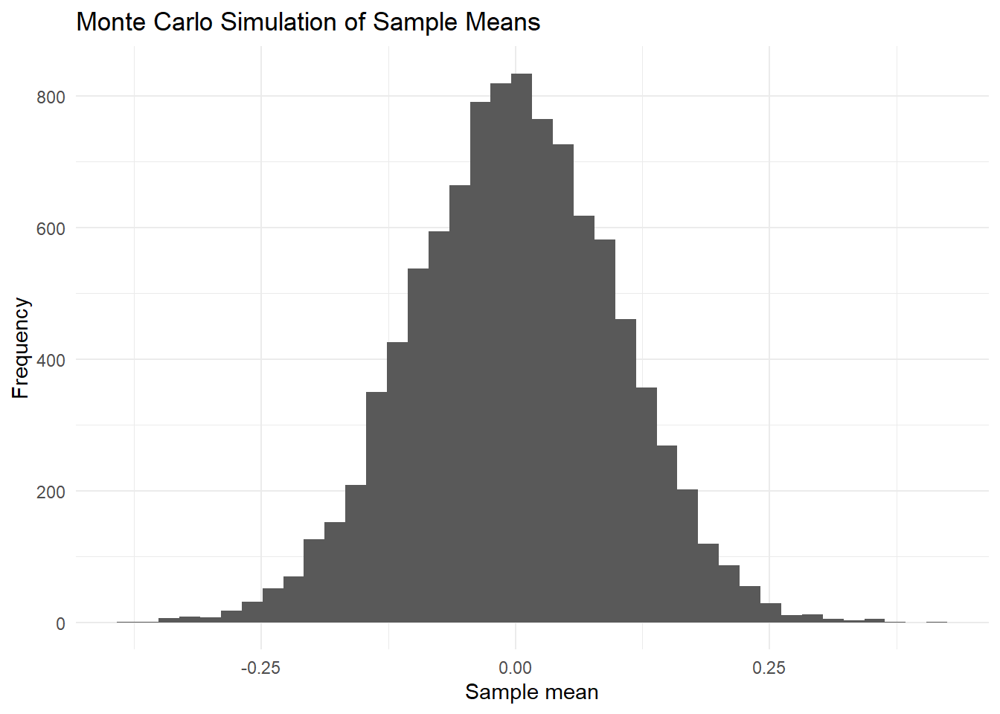
Bootstrap Confidence Interval
set.seed(123)
bootstrap_means <- replicate(
2000,
mean(sample(bayes_mc$observed_mean, replace = TRUE))
)
tibble(bootstrap_mean = bootstrap_means) |>
summarise(
mean_bootstrap = mean(bootstrap_mean),
lower_ci = quantile(bootstrap_mean, 0.025),
upper_ci = quantile(bootstrap_mean, 0.975)
)
TipKey Points
Monte Carlo is useful when the answer is easier to simulate than to derive analytically.
7.7 Simpson’s Paradox
NoteKnowledge Notes
What?
Simpson’s Paradox xảy ra khi xu hướng trong dữ liệu tổng hợp khác với xu hướng trong từng nhóm con.
Why?
Nó nhắc chúng ta rằng phân tích gộp có thể gây hiểu sai nếu có confounding variable.
Import Data
simpson <- read_excel(
advanced_file,
sheet = "06_Simpsons_Paradox"
) |>
clean_names()Department-level Rates
simpson |>
mutate(rate = admitted / applications) |>
arrange(department, gender)Overall Rates
simpson |>
group_by(gender) |>
summarise(
total_applications = sum(applications),
total_admitted = sum(admitted),
overall_rate = total_admitted / total_applications,
.groups = "drop"
)Visualization
ggplot(simpson, aes(x = department, y = admission_rate, fill = gender)) +
geom_col(position = "dodge") +
labs(
title = "Simpson's Paradox: Admission Rate by Department and Gender",
x = "Department",
y = "Admission rate"
) +
theme_minimal()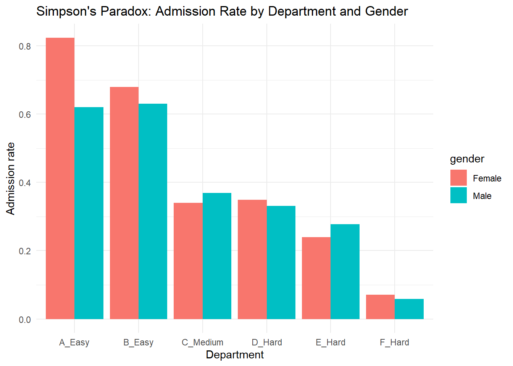
WarningCommon Mistakes
Không nên chỉ nhìn dữ liệu gộp.
Luôn kiểm tra các nhóm con quan trọng.
7.8 Advanced Likert Analysis
NoteKnowledge Notes
What?
Advanced Likert visualization giúp trình bày câu trả lời khảo sát theo dạng dễ đọc và phù hợp bài báo.
Main plots
- Horizontal stacked Likert bar
- Diverging Likert plot
- Grouped Likert plot
Import Likert Data
likert_data <- read_excel(
advanced_file,
sheet = "07_Likert_Advanced"
) |>
clean_names()Long Format
likert_long <- likert_data |>
pivot_longer(
cols = starts_with("q"),
names_to = "item",
values_to = "response"
) |>
mutate(
response = factor(
response,
levels = 1:5,
labels = c(
"Strongly disagree",
"Disagree",
"Neutral",
"Agree",
"Strongly agree"
)
)
)Horizontal Stacked Likert Bar
likert_summary <- likert_long |>
count(item, response) |>
group_by(item) |>
mutate(percent = n / sum(n) * 100) |>
ungroup()
ggplot(likert_summary, aes(x = percent, y = item, fill = response)) +
geom_col() +
labs(
title = "Horizontal Likert-style Stacked Bar",
x = "Percent",
y = "Survey item",
fill = "Response"
) +
theme_minimal()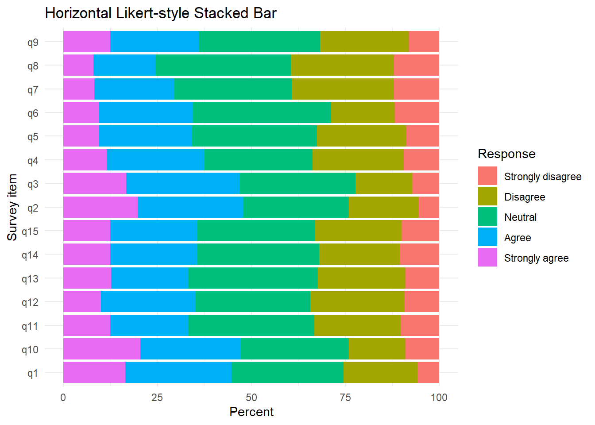
Diverging Likert-style Bar
likert_diverging <- likert_summary |>
mutate(
percent_signed = case_when(
response %in% c("Strongly disagree", "Disagree") ~ -percent,
response == "Neutral" ~ 0,
TRUE ~ percent
)
)
ggplot(likert_diverging, aes(x = percent_signed, y = item, fill = response)) +
geom_col() +
geom_vline(xintercept = 0, linetype = "dashed") +
labs(
title = "Diverging Likert-style Bar",
x = "Percent",
y = "Survey item",
fill = "Response"
) +
theme_minimal()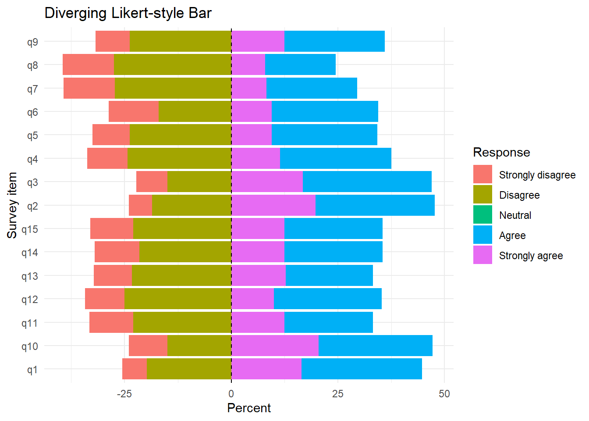
7.9 Advanced Visualization Lab with ggplot2
NoteKnowledge Notes
What?
This section is a visualization gallery.
It introduces the main families of ggplot2 figures and tidy visualization workflows.
Important note
It is not realistic to cover every single ggplot2 function, but this lab covers the most important figure types used in research and reporting.
Load Visualization Datasets
heatmap_data <- read_excel(
advanced_file,
sheet = "08_Visualization_Heatmap"
) |>
clean_names()
volcano_data <- read_excel(
advanced_file,
sheet = "09_Visualization_Volcano"
) |>
clean_names()
network_data <- read_excel(
advanced_file,
sheet = "10_Visualization_Network"
) |>
clean_names()7.9.1 Histogram
ggplot(adv_desc, aes(x = gpa)) +
geom_histogram(bins = 30) +
labs(
title = "Histogram",
x = "GPA",
y = "Frequency"
) +
theme_minimal()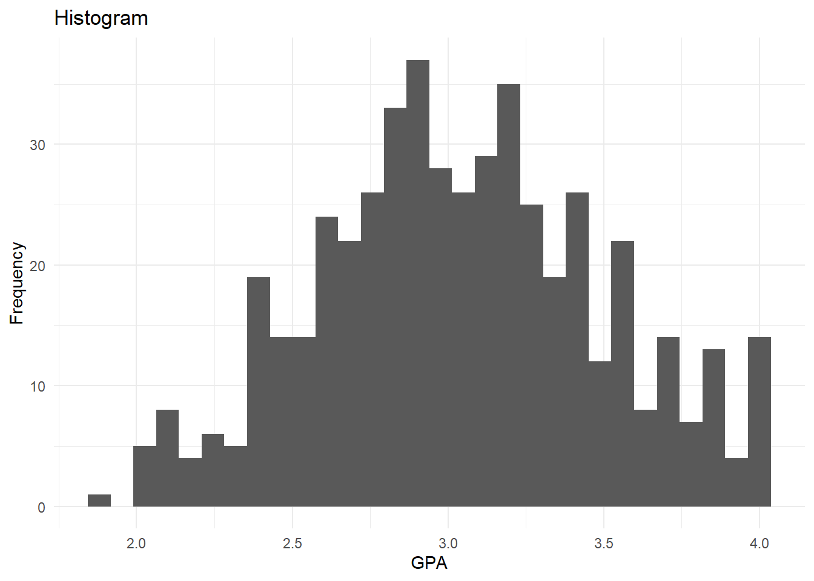
7.9.2 Density Plot
ggplot(adv_desc, aes(x = satisfaction)) +
geom_density() +
labs(
title = "Density Plot",
x = "Satisfaction",
y = "Density"
) +
theme_minimal()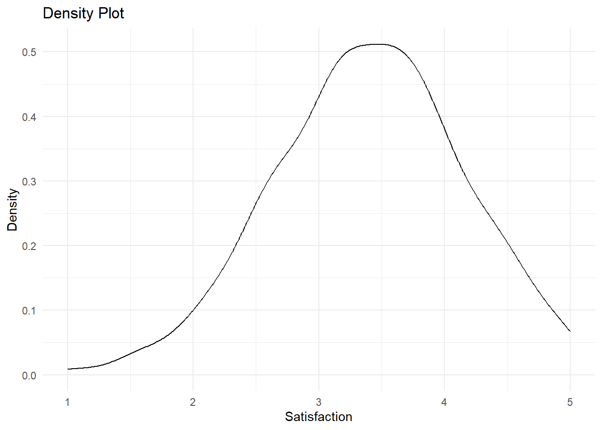
7.9.3 Boxplot
ggplot(adv_desc, aes(x = gender, y = satisfaction)) +
geom_boxplot() +
labs(
title = "Boxplot",
x = "Gender",
y = "Satisfaction"
) +
theme_minimal()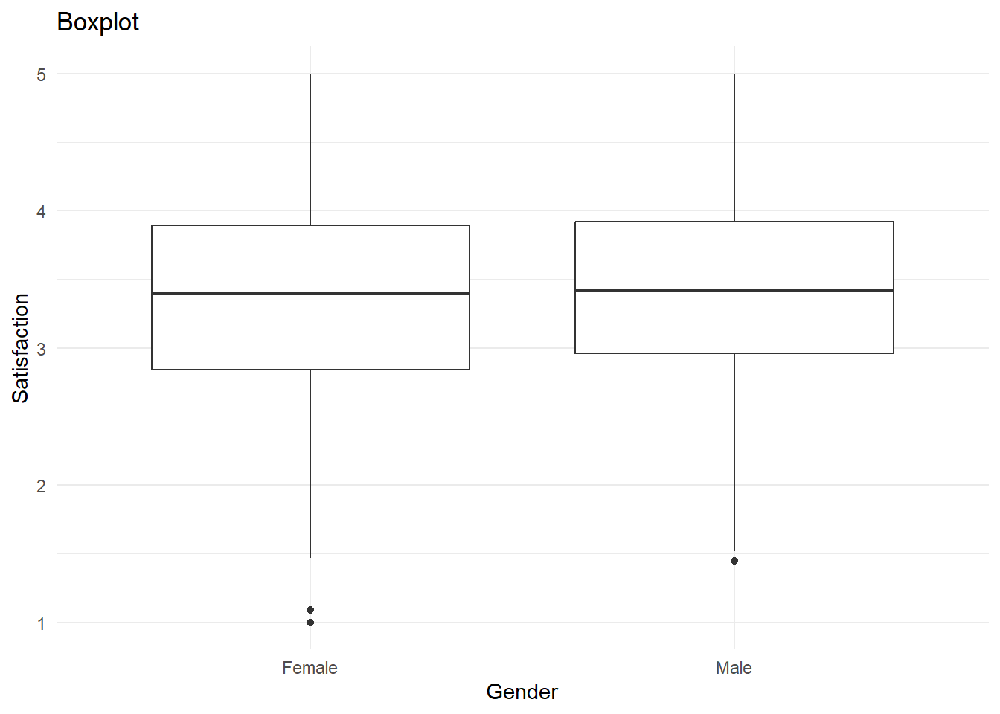
7.9.4 Violin Plot
ggplot(adv_desc, aes(x = gender, y = satisfaction)) +
geom_violin() +
labs(
title = "Violin Plot",
x = "Gender",
y = "Satisfaction"
) +
theme_minimal()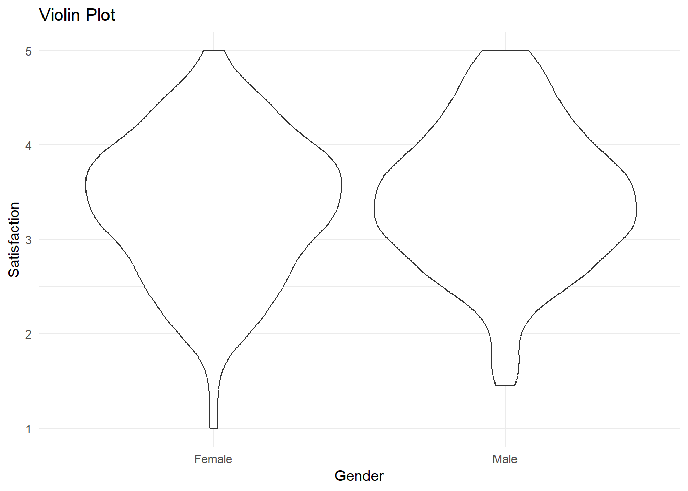
7.9.5 Jitter Plot
ggplot(adv_desc, aes(x = gender, y = satisfaction)) +
geom_jitter(width = 0.15, alpha = 0.5) +
labs(
title = "Jitter Plot",
x = "Gender",
y = "Satisfaction"
) +
theme_minimal()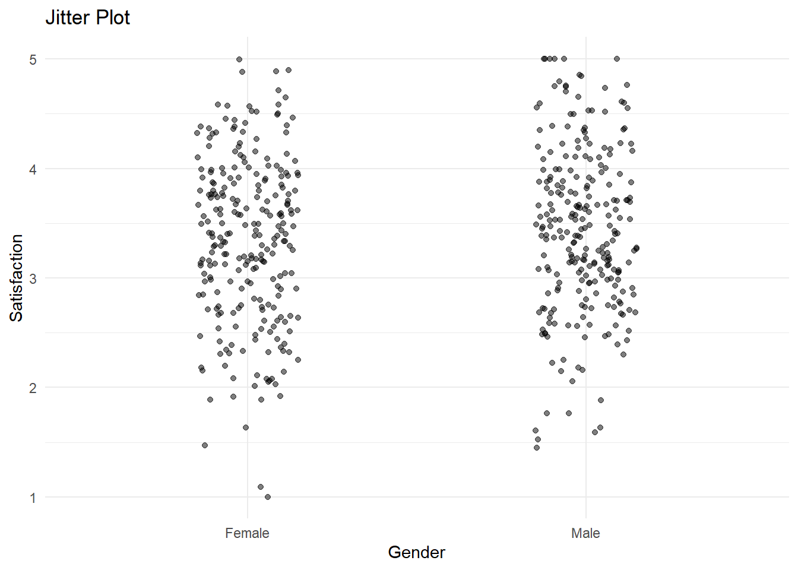
7.9.6 Bar Chart
adv_desc |>
count(region) |>
ggplot(aes(x = region, y = n)) +
geom_col() +
labs(
title = "Bar Chart",
x = "Region",
y = "Count"
) +
theme_minimal()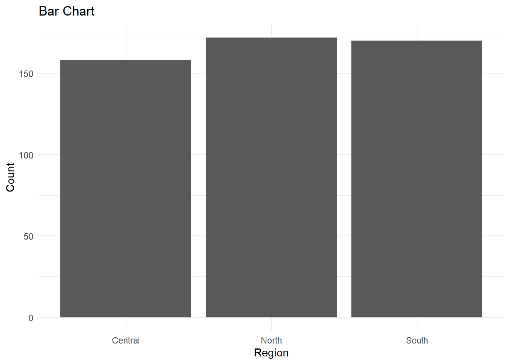
7.9.7 Horizontal Bar Chart
adv_desc |>
count(diagnosis_group) |>
ggplot(aes(x = n, y = reorder(diagnosis_group, n))) +
geom_col() +
labs(
title = "Horizontal Bar Chart",
x = "Count",
y = "Diagnosis group"
) +
theme_minimal()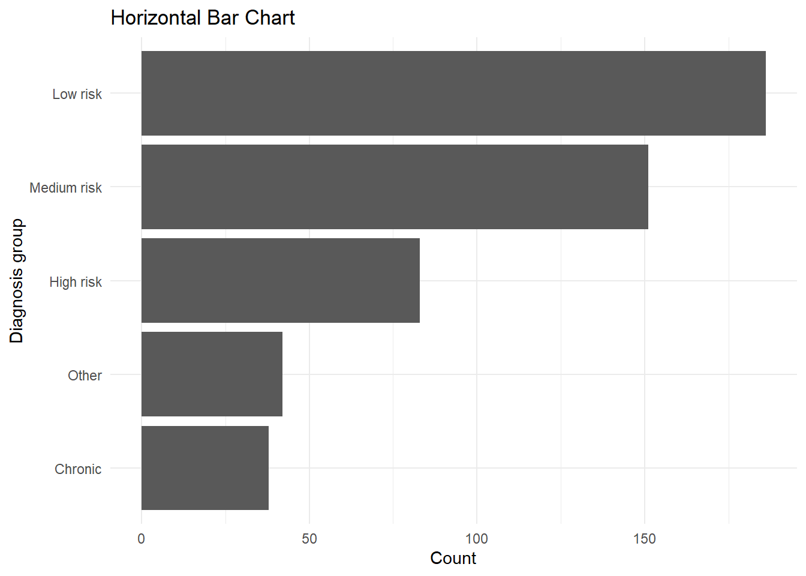
7.9.8 Stacked Bar Chart
ggplot(adv_desc, aes(x = region, fill = gender)) +
geom_bar() +
labs(
title = "Stacked Bar Chart",
x = "Region",
y = "Count",
fill = "Gender"
) +
theme_minimal()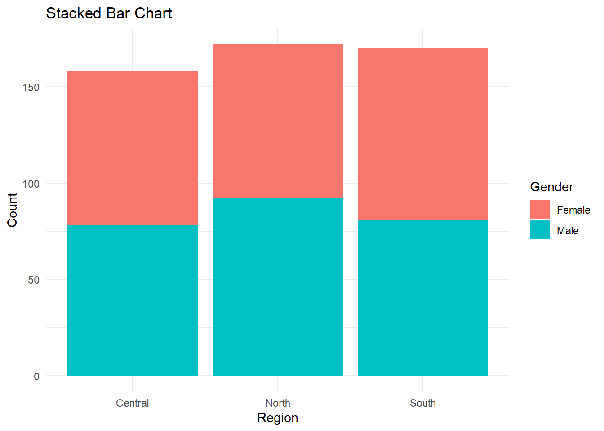
7.9.9 Proportional Stacked Bar Chart
ggplot(adv_desc, aes(x = region, fill = gender)) +
geom_bar(position = "fill") +
labs(
title = "Proportional Stacked Bar Chart",
x = "Region",
y = "Proportion",
fill = "Gender"
) +
theme_minimal()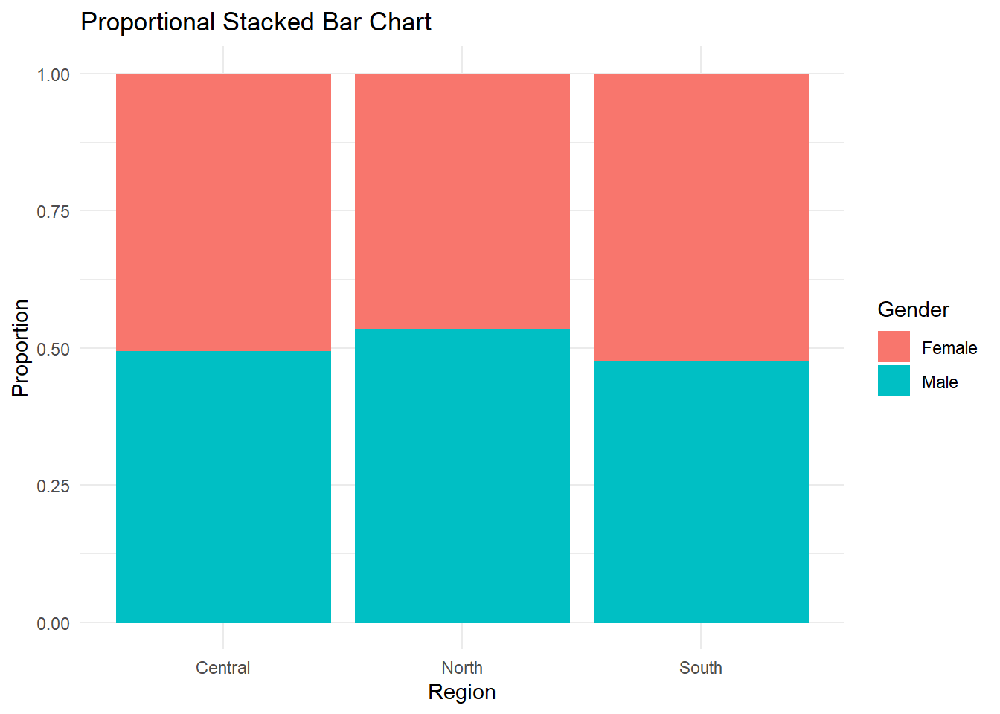
7.9.10 Scatter Plot
ggplot(adv_desc, aes(x = income_million_vnd, y = satisfaction)) +
geom_point(alpha = 0.6) +
labs(
title = "Scatter Plot",
x = "Income",
y = "Satisfaction"
) +
theme_minimal()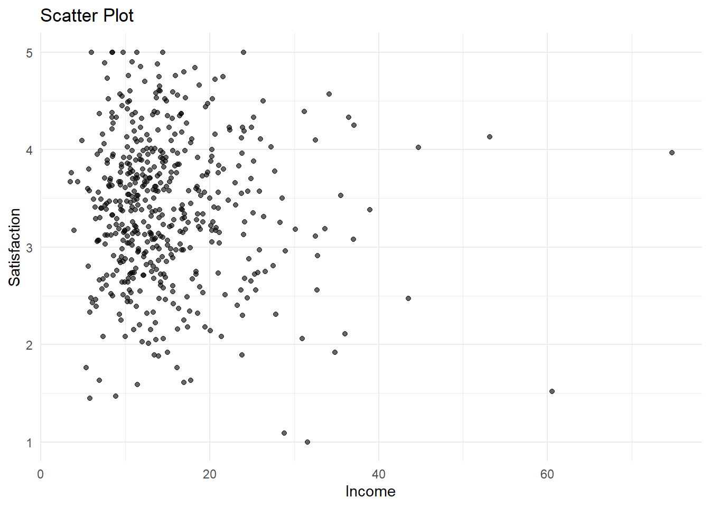
7.9.11 Scatter Plot with Regression Line
ggplot(adv_desc, aes(x = income_million_vnd, y = satisfaction)) +
geom_point(alpha = 0.6) +
geom_smooth(method = "lm", se = TRUE) +
labs(
title = "Scatter Plot with Regression Line",
x = "Income",
y = "Satisfaction"
) +
theme_minimal()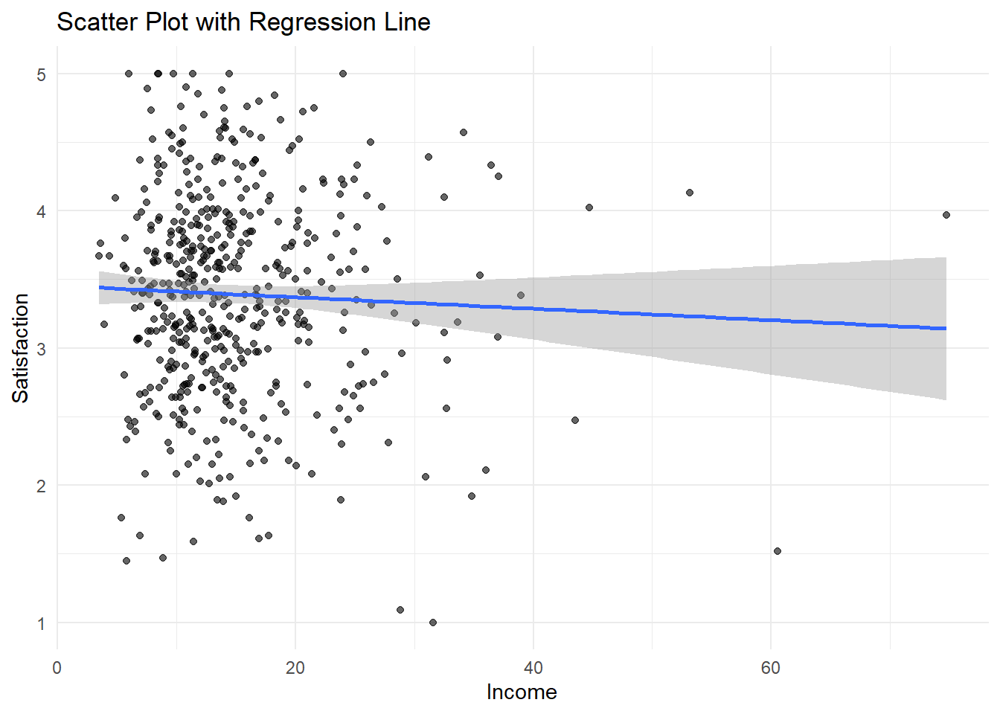
7.9.12 Line Chart
adv_desc |>
mutate(date = as.Date(date)) |>
group_by(date) |>
summarise(
mean_satisfaction = mean(satisfaction, na.rm = TRUE),
.groups = "drop"
) |>
ggplot(aes(x = date, y = mean_satisfaction)) +
geom_line() +
labs(
title = "Line Chart",
x = "Date",
y = "Mean satisfaction"
) +
theme_minimal()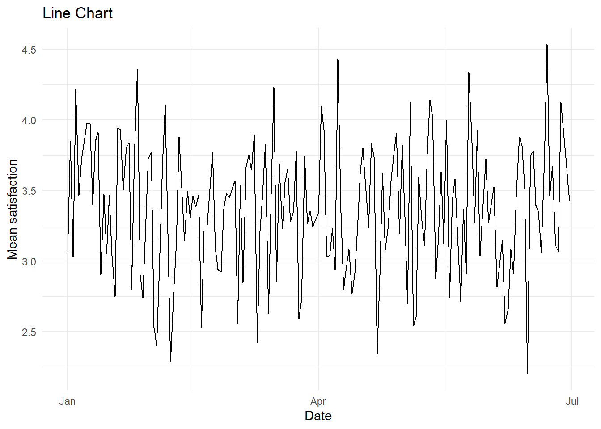
7.9.13 Area Chart
adv_desc |>
mutate(date = as.Date(date)) |>
group_by(date) |>
summarise(
claims = sum(claims_count, na.rm = TRUE),
.groups = "drop"
) |>
ggplot(aes(x = date, y = claims)) +
geom_area(alpha = 0.6) +
labs(
title = "Area Chart",
x = "Date",
y = "Claims"
) +
theme_minimal()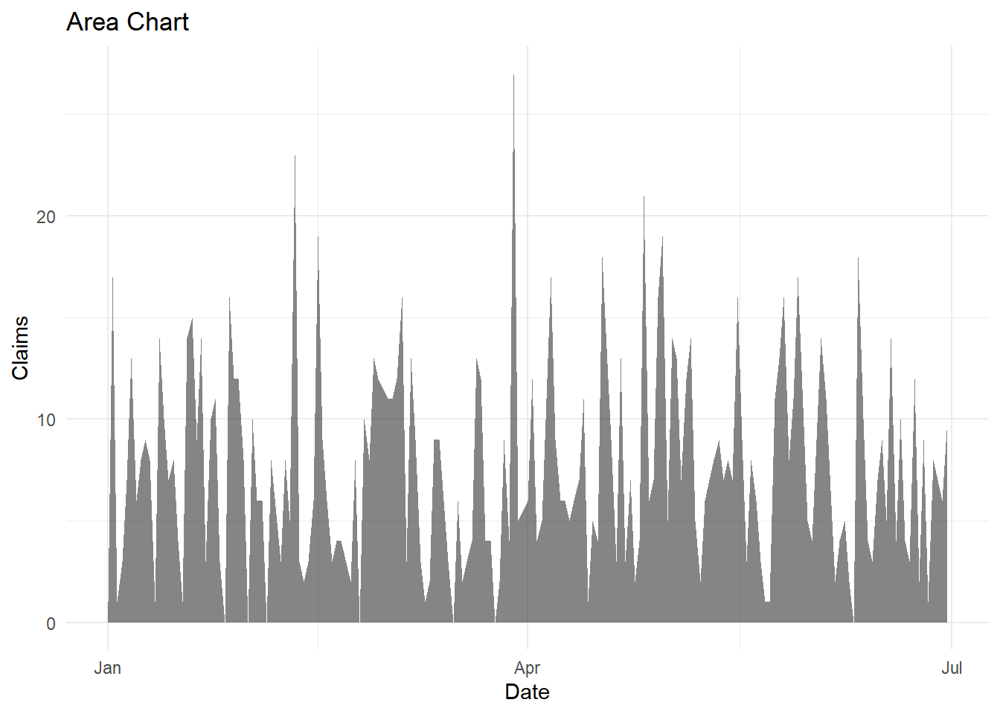
7.9.14 Faceted Plot
ggplot(adv_desc, aes(x = satisfaction)) +
geom_histogram(bins = 20) +
facet_wrap(~ region) +
labs(
title = "Faceted Histogram",
x = "Satisfaction",
y = "Frequency"
) +
theme_minimal()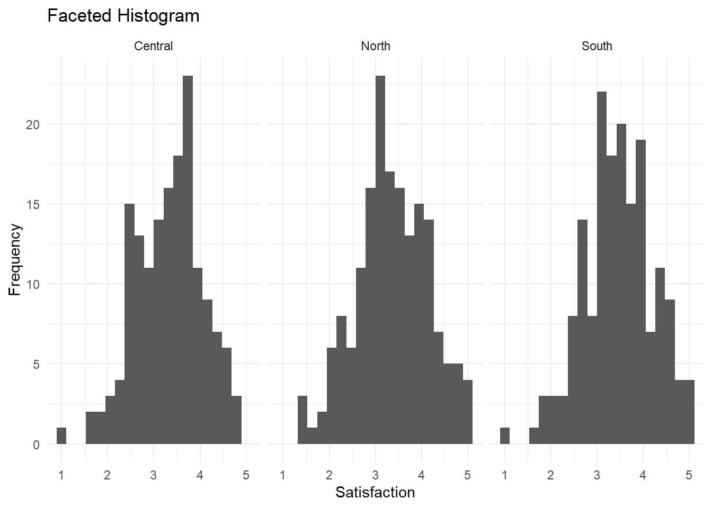
7.9.15 Mean and Error Bar Plot
adv_desc |>
group_by(region) |>
summarise(
mean_satisfaction = mean(satisfaction, na.rm = TRUE),
se_satisfaction = sd(satisfaction, na.rm = TRUE) / sqrt(n()),
.groups = "drop"
) |>
ggplot(aes(x = region, y = mean_satisfaction)) +
geom_col() +
geom_errorbar(
aes(
ymin = mean_satisfaction - se_satisfaction,
ymax = mean_satisfaction + se_satisfaction
),
width = 0.2
) +
labs(
title = "Mean Plot with Standard Error",
x = "Region",
y = "Mean satisfaction"
) +
theme_minimal()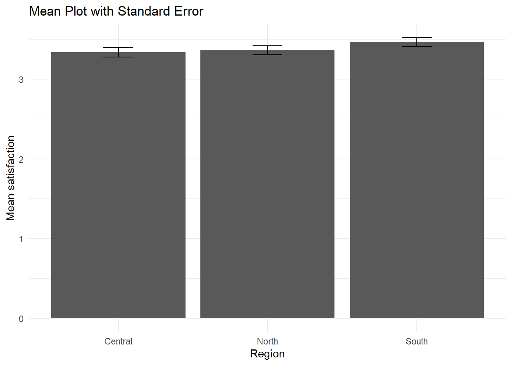
7.9.16 Dot Plot
adv_desc |>
group_by(school) |>
summarise(
mean_gpa = mean(gpa, na.rm = TRUE),
.groups = "drop"
) |>
ggplot(aes(x = mean_gpa, y = reorder(school, mean_gpa))) +
geom_point(size = 3) +
labs(
title = "Dot Plot",
x = "Mean GPA",
y = "School"
) +
theme_minimal()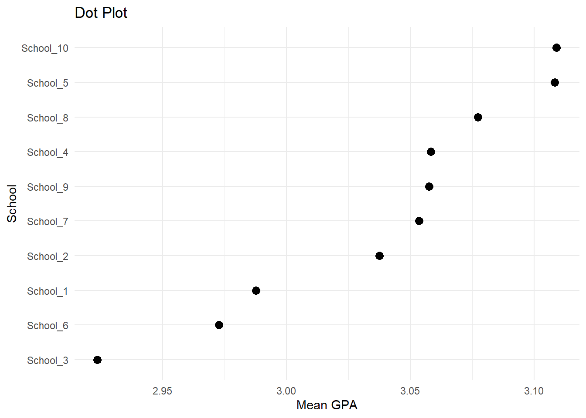
7.9.17 Lollipop Chart
adv_desc |>
group_by(school) |>
summarise(
mean_satisfaction = mean(satisfaction, na.rm = TRUE),
.groups = "drop"
) |>
ggplot(aes(x = mean_satisfaction, y = reorder(school, mean_satisfaction))) +
geom_segment(aes(x = 0, xend = mean_satisfaction, yend = school)) +
geom_point(size = 3) +
labs(
title = "Lollipop Chart",
x = "Mean satisfaction",
y = "School"
) +
theme_minimal()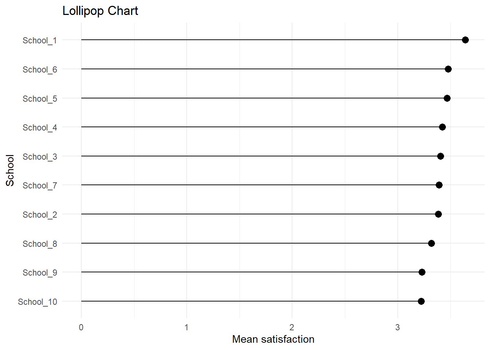
7.9.18 Heatmap
ggplot(heatmap_data, aes(x = sample_id, y = feature, fill = value_z)) +
geom_tile() +
labs(
title = "Heatmap",
x = "Sample",
y = "Feature",
fill = "Z-score"
) +
theme_minimal() +
theme(
axis.text.x = element_blank(),
axis.ticks.x = element_blank()
)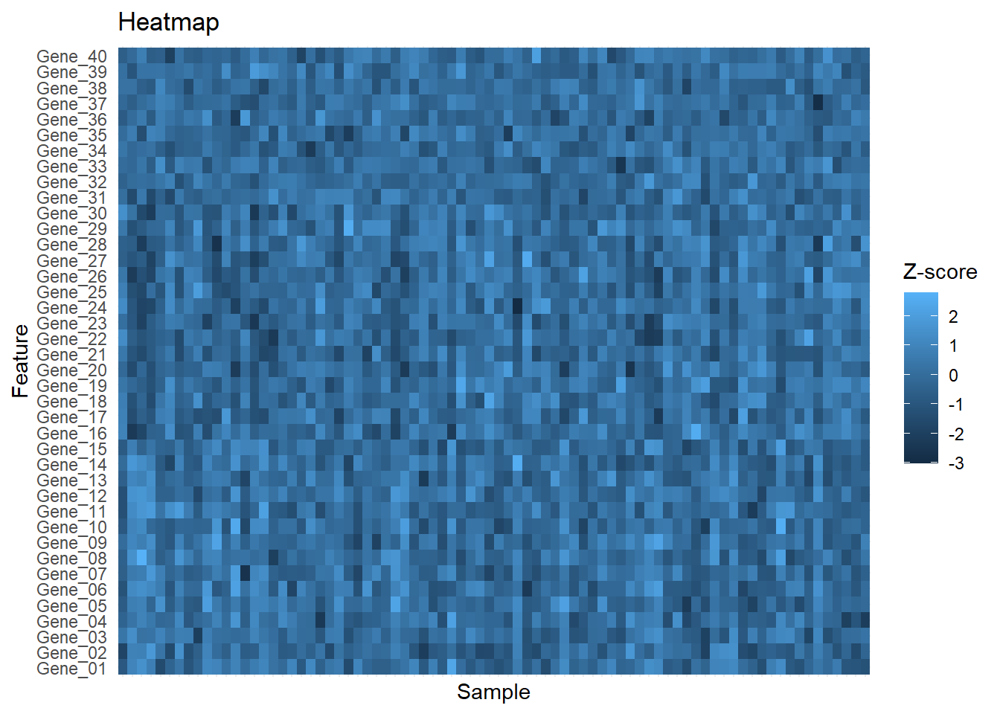
7.9.19 Correlation Heatmap
corr_vars <- adv_reg |>
select(
digital_readiness,
leadership_support,
workload,
motivation,
job_satisfaction,
productivity_score
)
corr_matrix <- cor(corr_vars, use = "pairwise.complete.obs")
corr_long <- as.data.frame(as.table(corr_matrix)) |>
rename(
variable_1 = Var1,
variable_2 = Var2,
correlation = Freq
)
ggplot(corr_long, aes(x = variable_1, y = variable_2, fill = correlation)) +
geom_tile() +
geom_text(aes(label = round(correlation, 2)), size = 3) +
labs(
title = "Correlation Heatmap",
x = NULL,
y = NULL,
fill = "r"
) +
theme_minimal() +
theme(
axis.text.x = element_text(angle = 45, hjust = 1)
)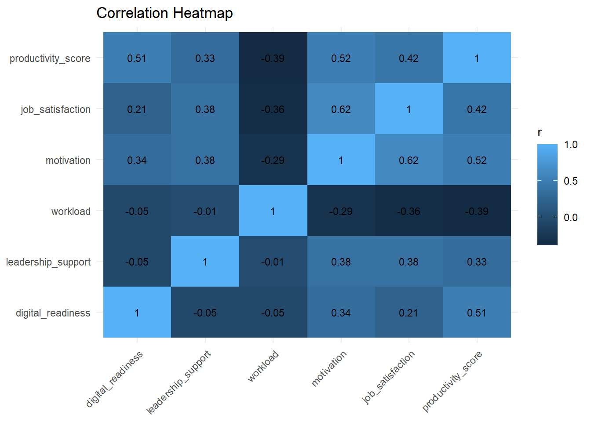
7.9.20 Volcano Plot
ggplot(volcano_data, aes(x = log2_fold_change, y = neg_log10_p)) +
geom_point(aes(shape = significant), alpha = 0.7) +
geom_vline(xintercept = c(-1, 1), linetype = "dashed") +
geom_hline(yintercept = -log10(0.05), linetype = "dashed") +
labs(
title = "Volcano Plot",
x = "Log2 fold change",
y = "-log10(p-value)",
shape = "Significant"
) +
theme_minimal()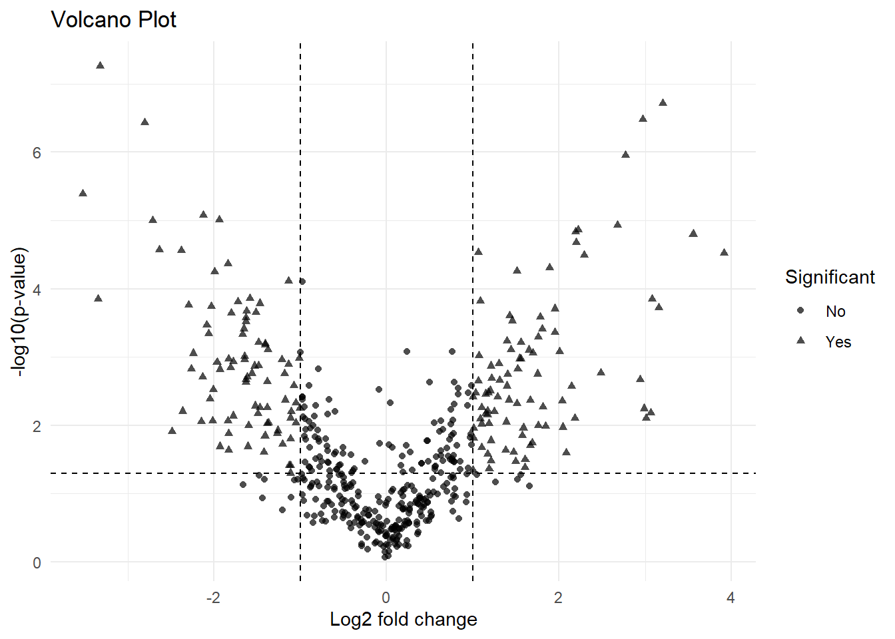
7.9.21 Ridgeline Plot
if (requireNamespace("ggridges", quietly = TRUE)) {
ggplot(adv_desc, aes(x = satisfaction, y = region)) +
ggridges::geom_density_ridges() +
labs(
title = "Ridgeline Plot",
x = "Satisfaction",
y = "Region"
) +
theme_minimal()
}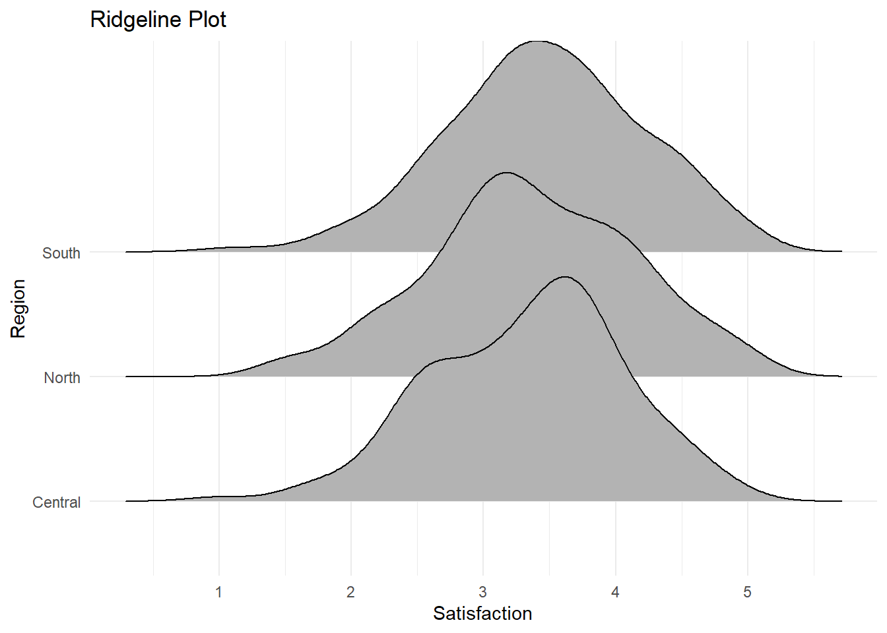
7.9.22 Alluvial Plot
if (requireNamespace("ggalluvial", quietly = TRUE)) {
alluvial_data <- adv_desc |>
count(region, gender, diagnosis_group)
ggplot(
alluvial_data,
aes(
axis1 = region,
axis2 = gender,
axis3 = diagnosis_group,
y = n
)
) +
ggalluvial::geom_alluvium(aes(fill = region), width = 1/12) +
ggalluvial::geom_stratum(width = 1/12) +
ggalluvial::stat_stratum(
geom = "text",
aes(label = after_stat(stratum)),
size = 3
) +
scale_x_discrete(
limits = c("Region", "Gender", "Diagnosis"),
expand = c(.05, .05)
) +
labs(
title = "Alluvial Plot",
y = "Count"
) +
theme_minimal()
}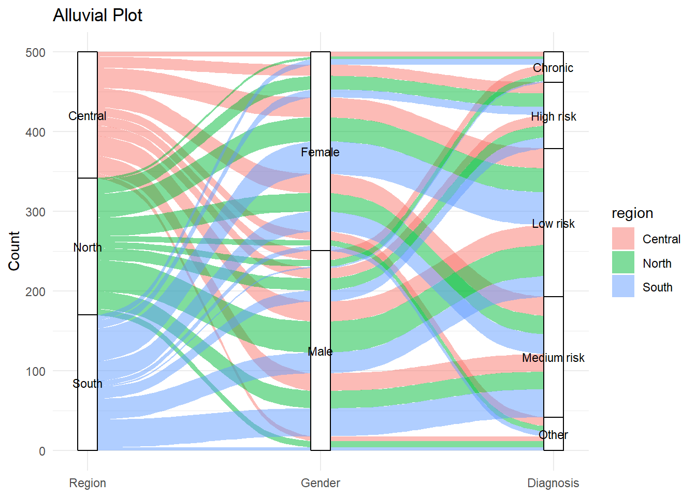
7.9.23 Network Plot
if (requireNamespace("igraph", quietly = TRUE) &&
requireNamespace("ggraph", quietly = TRUE)) {
graph_object <- igraph::graph_from_data_frame(
network_data,
directed = TRUE
)
ggraph::ggraph(graph_object, layout = "fr") +
ggraph::geom_edge_link(
aes(width = weight),
alpha = 0.4,
arrow = grid::arrow(length = unit(3, "mm"))
) +
ggraph::geom_node_point(size = 4) +
ggraph::geom_node_text(
aes(label = name),
repel = TRUE
) +
theme_void() +
labs(
title = "Network Plot"
)
}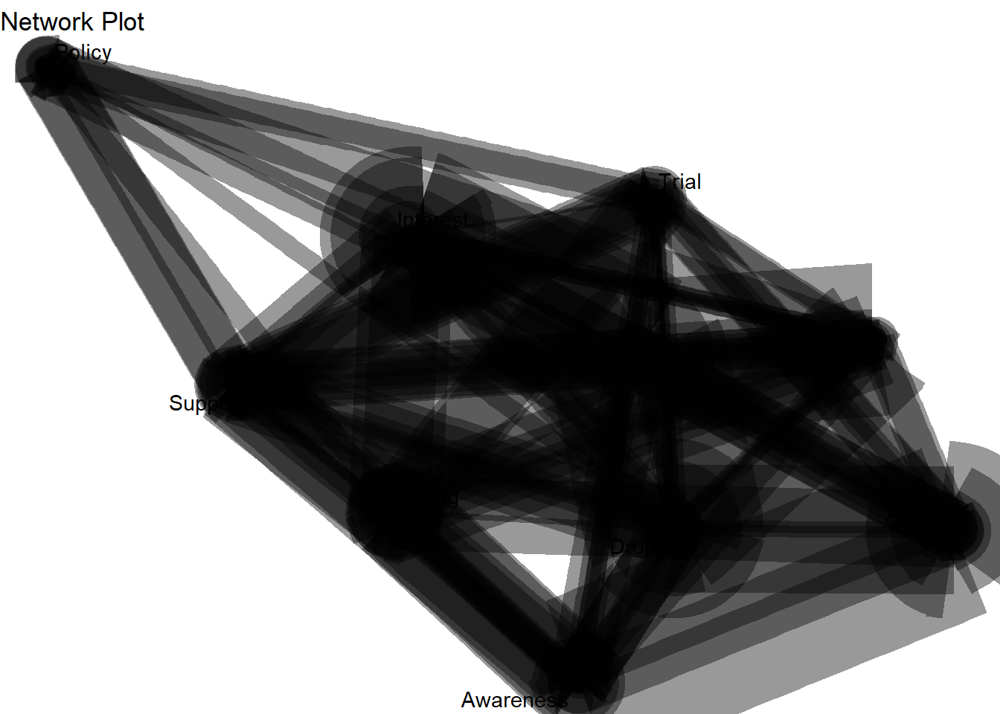
7.9.24 Coordinate Flip
adv_desc |>
count(region) |>
ggplot(aes(x = region, y = n)) +
geom_col() +
coord_flip() +
labs(
title = "Coordinate Flip Example",
x = "Region",
y = "Count"
) +
theme_minimal()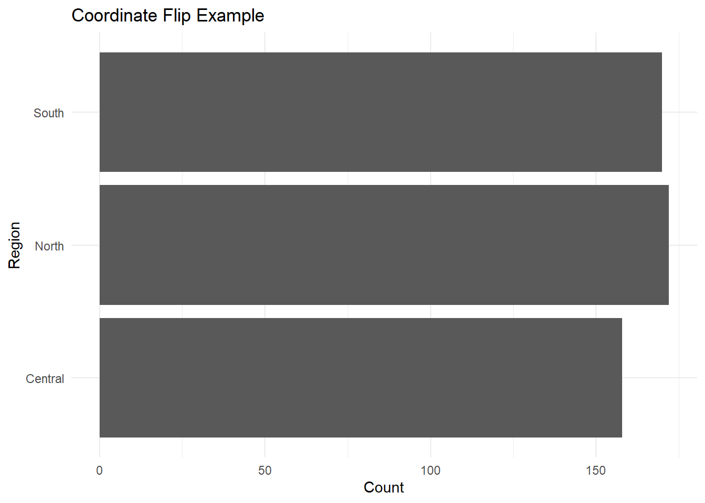
7.9.25 Theme Comparison
ggplot(adv_desc, aes(x = gpa, y = satisfaction)) +
geom_point(alpha = 0.6) +
geom_smooth(method = "lm") +
labs(
title = "Theme Classic Example",
x = "GPA",
y = "Satisfaction"
) +
theme_classic()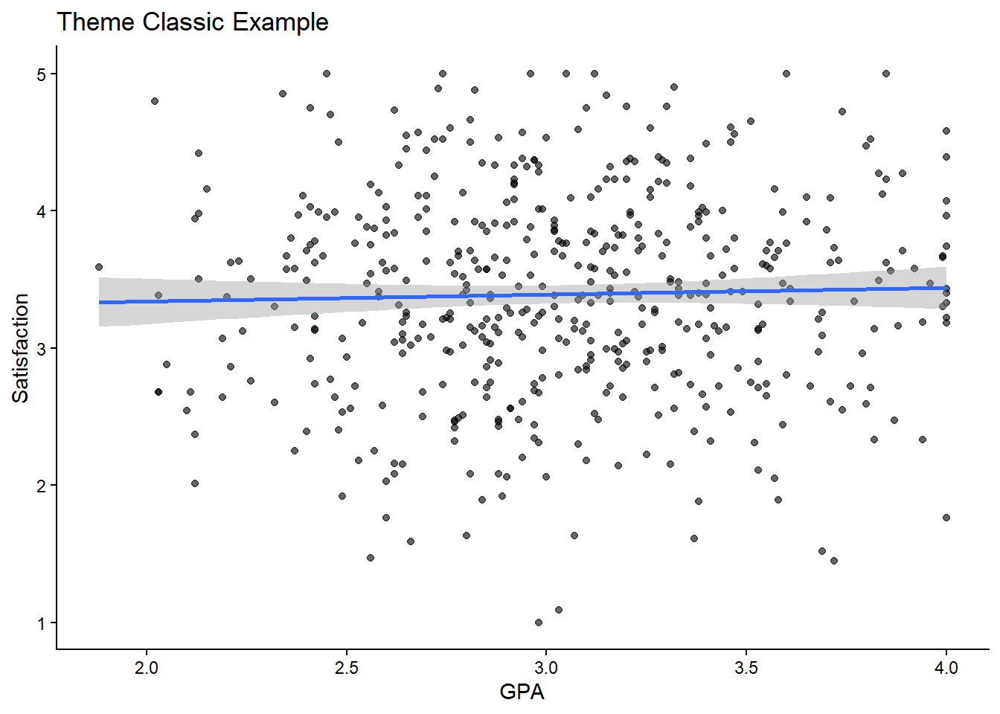
TipKey Points
The most important ggplot2 skills are:
- Reshape data with
pivot_longer() - Map variables using
aes() - Select appropriate
geom_*() - Add labels with
labs() - Improve readability with
theme_*() - Use facets for subgroup comparison
- Export figures with
ggsave()
7.10 Research Publication Toolkit
NoteKnowledge Notes
What?
A publication toolkit helps researchers convert analysis outputs into report-ready tables, figures and interpretations.
Core outputs
- Table 1
- Descriptive table
- Regression table
- SEM table
- Correlation heatmap
- Likert plot
- Figure captions
- Method selection guide
Method Selection Guide
| Research question | Recommended method |
|---|---|
| What does the sample look like? | Descriptive statistics |
| Are two variables associated? | Correlation |
| Which factors predict an outcome? | Regression |
| Which variables matter most for prediction? | LASSO / Elastic Net |
| Does a theoretical model fit the data? | SEM |
| How uncertain is the estimate? | Bayesian / Bootstrap |
| Can aggregation mislead us? | Simpson’s Paradox |
| How do respondents answer survey items? | Likert visualization |
Practice Exercise
ImportantPractice Exercise
Using module7_advanced_data.xlsx, complete:
- Create an advanced descriptive report.
- Fit one logistic regression model.
- Fit one LASSO model.
- Run one Monte Carlo simulation.
- Explain Simpson’s Paradox.
- Create one horizontal Likert plot.
- Create five different ggplot2 figures.
- Create one heatmap.
- Create one volcano plot.
- Write a short interpretation for each output.
Challenge
WarningChallenge
Task
Create a mini research analytics portfolio using at least five methods from Module 7.
Your portfolio must include:
- One advanced descriptive table
- One advanced regression model
- One regularized regression model
- One simulation
- One advanced visualization
- One interpretation paragraph
TipSuggested Solution
A strong portfolio can include:
- Skewness and kurtosis table
- Logistic regression for binary adoption
- LASSO for predictor selection
- Monte Carlo simulation of sample means
- Diverging Likert plot
- Correlation heatmap
- Short academic interpretation
Mini Project 7
ImportantMini Project 7
Topic
Advanced Research Analytics Portfolio
Deliverable
Module7_Advanced_Analytics_Portfolio.htmlRequired sections
- Advanced descriptive statistics
- Advanced regression model
- Ridge/LASSO/Elastic Net analysis
- Monte Carlo simulation
- Simpson’s Paradox interpretation
- Likert visualization
- Advanced ggplot2 visualization gallery
- Method selection guide
- Academic interpretation
- Reflection on when to use each method
Key Takeaways
TipKey Points
- Advanced analytics should be selected based on the research question, not trendiness.
- Ridge, LASSO and Elastic Net are useful for prediction and many predictors.
- Bayesian thinking focuses on uncertainty and probability.
- Monte Carlo simulation helps understand uncertainty through repeated sampling.
- Simpson’s Paradox shows why subgroup analysis matters.
- Likert visualization is essential for survey research.
ggplot2can produce almost all common research figures when combined with tidy data.- Publication-ready research requires good methods, good figures and careful interpretation.
What Next?
NoteWhat Next?
After Module 7, learners should be able to design their own research analytics workflow.
Recommended next steps:
- Choose a research question.
- Identify the outcome variable.
- Select a suitable method.
- Run the analysis.
- Create publication-ready figures.
- Write an interpretation.
- Document the full workflow in Quarto.